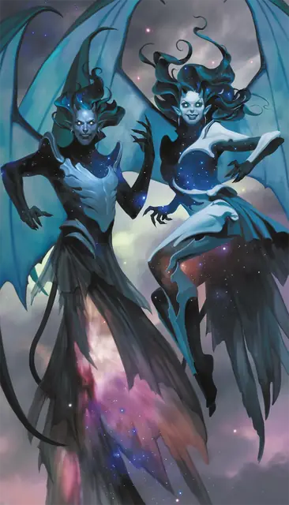

Инкуб
Incubus
Среднее Исчадие, Нейтральное Злое

Класс Защиты 15 Инициатива +3 (13)
Хиты 66 (12к8 + 12)
Скорость 30 футов, Полёта 60 футов
| мод | спас | ||
|---|---|---|---|
| СИЛ | 8 | −1 | −1 |
| ЛОВ | 17 | +3 | +3 |
| ТЕЛ | 13 | +1 | +1 |
| мод | спас | ||
|---|---|---|---|
| ИНТ | 15 | +2 | +2 |
| МДР | 12 | +1 | +1 |
| ХАР | 20 | +5 | +5 |
Сопротивление урону Огонь, Психический, Холод, Яд
Чувства Тёмное зрение 60 футов, пассивное Восприятие 15
Языки Общий, Бездны, Инфернальный, Телепатия 60 фт.
Опасность 4 (1 100 опыта; БВ +2)
Особенности
Облик суккуба. Когда инкуб завершает Долгий отдых, он может перевоплотиться в Суккуба, используя соответствующий блок статистики вместо своего. Снаряжение, которое он носит или несёт, не превращается.
Действия
Мультиатака. Инкуб совершает две атаки Истощающим касанием.
Истощающее касание. Бросок рукопашной атаки: +7, досягаемость 5 фт. Попадание: 15 (3к6 + 5) Психического урона, и цель проклята на 24 часа или пока инкуб не умрёт. Пока проклятие действует, цель не может получать преимущества Короткого отдыха.
Сотворение заклинаний. Инкуб сотворяет одно из следующих заклинаний, не нуждаясь в Материальных компонентах (заклинательная характеристика — Харизма, Сл спасброска заклинаний 15):
Неограниченно: Маскировка, Эфирность
1/день каждое: Гипнотический узор, Грёзы
Бонусные действия
Кошмар (Перезарядка 6). Спасбросок Мудрости: Сл 15, одно существо, видимое инкубом в пределах 60 футов. Провал: Если у цели 20 Хитов или меньше, она получает состояние Бессознательный на 1 час, пока не получит урон, или пока существо в пределах 5 футов от неё действием не разбудит цель. В противном случае она получает 18 (4к8) Психического урона.
Бонус мастерства +2
Среда обитания Город, Нижние планы
Сокровища Любые
Инкуб
Похищающий жизнь охотник за снами
Инкубы паразитируют на грёзах беззащитных смертных. Проникнув в дома спящих, они поглощают сны и подменяют их ужасными кошмарами. Инкубы посещают смертных каждую ночь, пока те не погибнут, а затем отправляются на поиски свежей добычи. Как правило, они нацеливаются на близких или любимых погибшей жертвы.
Инкубы могут превращаться в суккубов и обратно, принимая облик, который поможет им манипулировать врагами во снах или наяву.
Жертвы инкубов страдают от повторяющихся кошмаров. Совершите бросок по таблице «Насланный инкубом кошмар» для вдохновения или выберите сами описание этих ночных наваждений.
Насланный инкубом кошмар
| 1к8 | Жертве инкуба снится кошмар, в котором... |
| 1 | Присутствует разгневанный член её семьи или авторитет. |
| 2 | Её преследуют в глуши. |
| 3 | Её заживо пожирают животные или чудовища. |
| 4 | Она падает, тонет или задыхается. |
| 5 | Происходит унизительный публичный скандал. |
| 6 | Она видит мрачного незнакомца или силуэт чудовища. |
| 7 | Она видит травмирующее событие из прошлого. |
| 8 | К ней приходит гость с жутким или загадочным посланием. |